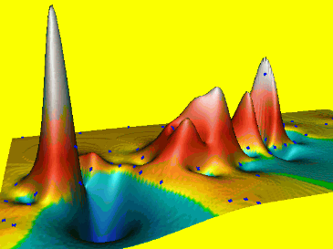
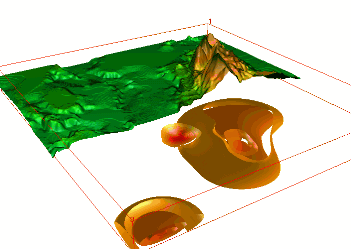
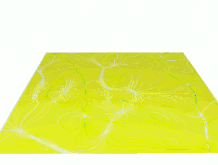
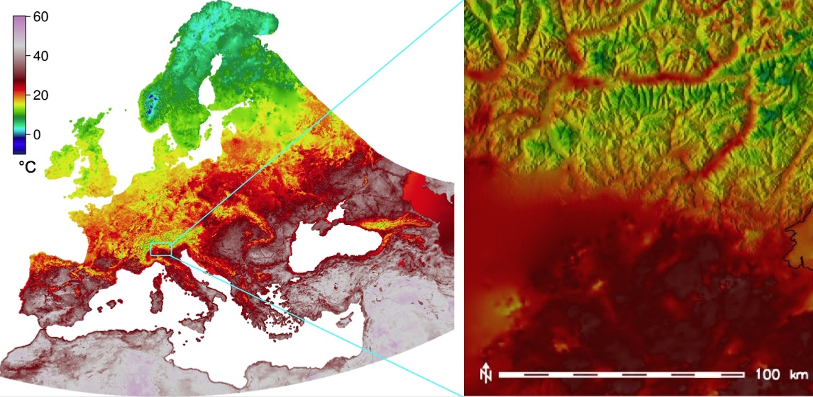
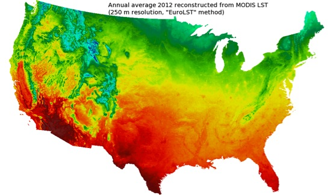
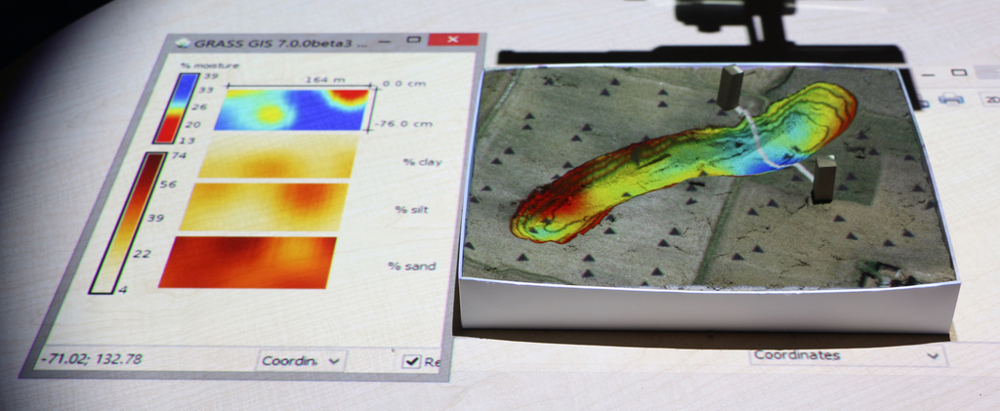
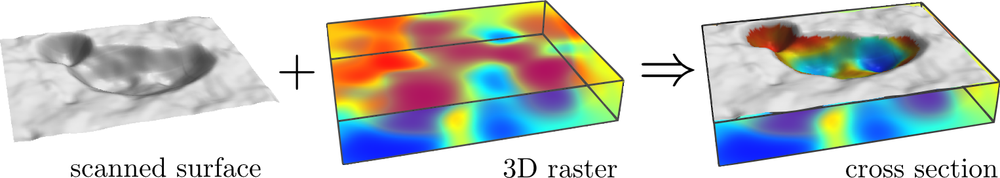
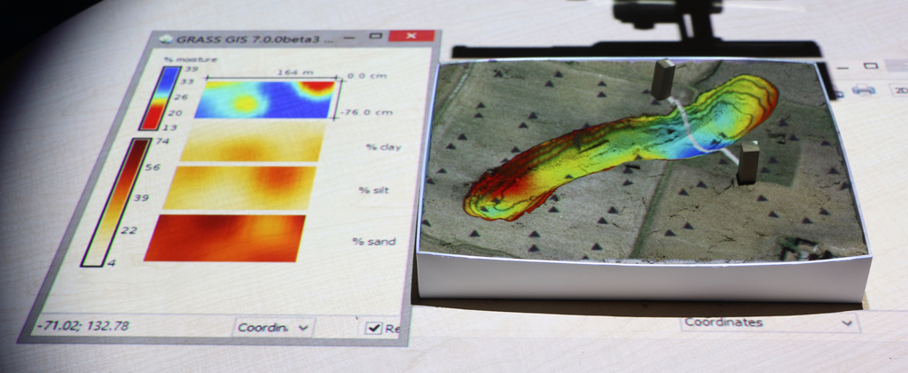
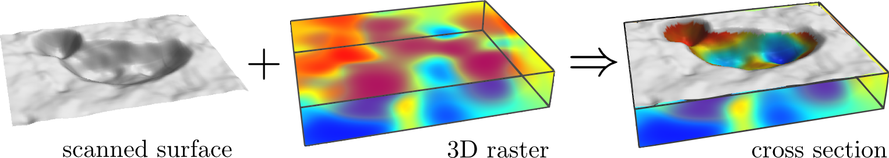

Year 1987: Let William Shatner do the introduction
GRASS GIS for geospatial research
grass.osgeo.org
general purpose GIS with wxPython GUI and CLI
python shell and pyGRASS
backend processing for QGIS, R statistics, WebGIS
powerful 2D/3D raster, imagery and vector processing
single integrated software with 30 years of development
GRASS GIS and innovation
GRASS has long history - known as a reliable geospatial number cruncher (Neteler 2014)
Developed as component of research projects - innovation through research
Many historically innovative tools serve today: our examples are just a small subset
Watersheds and stream extraction
First worldwide map of watersheds derived from a global DEM
Unique least cost path algorithm, no depression filling needed:
r.watershed
Updated for massive data sets (SRTM, lidar DEMs)
Ehlschlaeger C., 1989, Using the AT Search Algorithm to Develop Hydrologic Models from Digital Elevation Data,
Proc IGIS Symposium '89, 275-281.
Metz M., Mitasova H., and Harmon R.S., 2011, Efficient extraction of drainage networks from massive, radar-based elevation models with least cost path search, Hydrology and Earth System Sciences, 15, 667-678
Multivariate splines
2D, 3D and 4D interpolation with tuneable tension

Mitasova, H., L. Mitas, 1993, Interpolation by regularized spline with tension : I. Theory and implementation. Mathematical Geology 25, 641-655.
Splines with geometry analysis
simulatenous topo analysis: gradients, curvatures
tuneable level of detail, geometry preserving smoothing
Mitasova, H., Mitas, L., Harmon, R.S., 2005, Simultaneous spline interpolation and topographic analysis for lidar elevation data: methods for Open source GIS, IEEE GRSL 2(4), 375-379.
Dynamic volume modeling
Groundwater pollution plume interpolated from 10 years of well monitoring data
using 4D spline function

WM Brown, M Astley, T Baker, H Mitasova, 1995, GRASS as an integrated GIS and visualization system for spatio-temporal modeling AUTOCARTO, 89-99
Dynamic water and sediment flow
Flow accumulation and sediment transport capacity visualized as dynamic surfaces

Mitasova, H., L. Mitas, B.M. Brown, D.P. Gerdes, I. Kosinovsky, 1995, Modeling spatially and temporally distributed phenomena: New methods and tools for GRASS GIS. IJGIS, 9 (4), 443-446.
Duality of particles and fields
Path sampling method for flow continuity equations
Mitas, L., Mitasova, H., 1998, Distributed erosion modeling for effective erosion prevention. Water Resources Research 34(3), pp. 505-516
GRASS 7 innovations
Space-Time Framework
Space-time 2D,3D raster and vector datatypes
Time series datasets managed in temporal database
New modules: query, aggregation, conversion, statistics, gap filling
Gebbert, S., Pebesma, E., 2014. TGRASS: A temporal GIS for field based environmental modeling.
Environmental Modelling & Software 53, 1-12.
MODIS land surface temperature
14 years of 4/day (20K) maps, entire Europe, 250m res
advanced statistics to fill no-data and enhance resolution,
multivariate regression includes elevation, solar angle, precipitation
 
EuroLST: http://gis.cri.fmach.it/eurolst/, Metz, Rocchini, Neteler, 2014: Rem Sens, 6(5): 3822-3840
DEM time series visualization:
Jockey's Ridge migration 1974 - 2014, lidar time series


 


